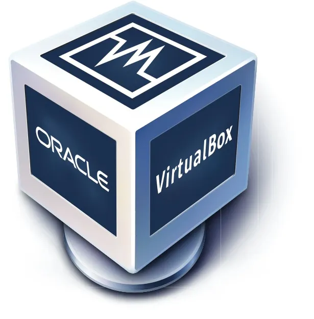
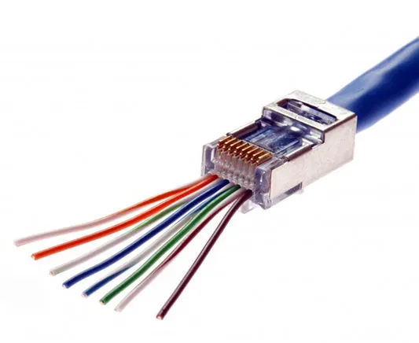
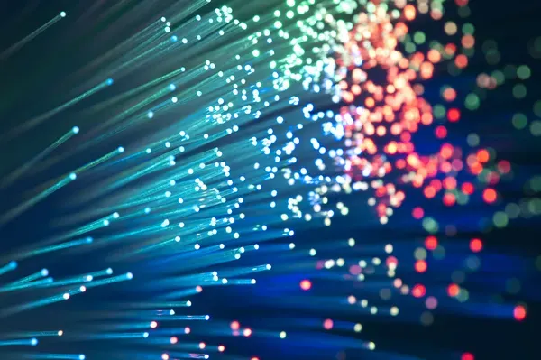

En este blog presento los temas tecnológicos que más me interesaron durante el curso, explicados con ejemplos, experiencias personales y aplicaciones reales.
Explorar TemasLa virtualización consiste en crear sistemas operativos virtuales dentro de una computadora física. Esto permite probar programas o configuraciones sin afectar el equipo principal.
Este tema me llamó mucho la atención porque actualmente es utilizado en ciberseguridad y hacking ético para analizar sistemas y archivos sospechosos de manera segura.
Programas como VirtualBox permiten instalar sistemas operativos virtuales para hacer pruebas y aprender sobre seguridad informática.

| Herramienta | Gratis | Facilidad de uso | Rendimiento |
|---|---|---|---|
| VirtualBox | ✓ Sí | Alto | Bueno |
| VMware | Parcial | Medio | Excelente |
| Hyper-V | Parcial | Bajo | Excelente |

Las redes informáticas permiten conectar computadoras y compartir información entre dispositivos utilizando protocolos de comunicación.
Durante el curso realizamos una práctica creando cables RJ45 y conectando computadoras mediante un switch.
Esta práctica me ayudó a comprender cómo se comunican las computadoras dentro de una red local.
| Estándar | Velocidad | Cable | Año |
|---|---|---|---|
| Fast Ethernet | 100 Mbps | Cat 5 | 1995 |
| Gigabit Ethernet | 1 Gbps | Cat 5e/6 | 1999 |
| 10 Gigabit | 10 Gbps | Cat 6a/7 | 2006 |
Python es un lenguaje de programación muy utilizado debido a su facilidad y potencia en múltiples áreas.
Durante el curso realizamos programas para calcular áreas de figuras geométricas utilizando variables y fórmulas matemáticas.
Creamos programas capaces de calcular áreas de círculos, triángulos y rectángulos automáticamente.
Porque me permitió entender cómo la programación puede resolver problemas matemáticos de forma rápida y eficiente.
| Tipo | Descripción | Ejemplo | Uso |
|---|---|---|---|
| int | Números enteros | 42 | Cálculos sin decimales |
| float | Números decimales | 3.14 | Cálculos precisos |
| str | Cadena de texto | "Hola" | Texto y mensajes |
| bool | Verdadero/Falso | True | Condiciones lógicas |
| Estos son los tipos básicos más utilizados en Python | |||
Las bases de datos permiten almacenar y organizar información digitalmente de forma eficiente y segura.
Gracias a ellas es posible guardar información de usuarios, productos, notas o registros importantes. Durante el curso aprendimos a crear y consultar bases de datos usando MySQL.
Este tema me gustó porque comprendí la importancia que tienen las bases de datos en la tecnología moderna.
| Base de Datos | Tipo | Uso Principal | Ventaja |
|---|---|---|---|
| MySQL | Relacional | Sitios Web | Fácil de usar |
| PostgreSQL | Relacional | Aplicaciones complejas | Muy potente |
| MongoDB | NoSQL | Datos flexibles | Escalabilidad |
| Firebase | NoSQL Cloud | Aplicaciones móviles | Tiempo real |
| Cada base de datos tiene fortalezas específicas para diferentes proyectos | |||
La fibra óptica es una tecnología que transmite información utilizando pulsos de luz a través de cables especiales.
Esta tecnología ofrece conexiones mucho más rápidas y estables que los cables tradicionales. En la actualidad, la mayoría de conexiones de internet de alta velocidad utilizan fibra óptica.
Me sorprendió descubrir cómo la información puede viajar utilizando luz a velocidades extremadamente altas.

| Medio de Transmisión | Velocidad | Distancia | Costo |
|---|---|---|---|
| Cable de Cobre | 100 Mbps | 100 metros | Bajo |
| Fibra Óptica | 10 Gbps+ | Kilómetros | Medio-Alto |
| Inalámbrico (WiFi) | 500 Mbps | 100 metros | Bajo |
| La fibra óptica es la opción más avanzada para transmisión de datos | |||